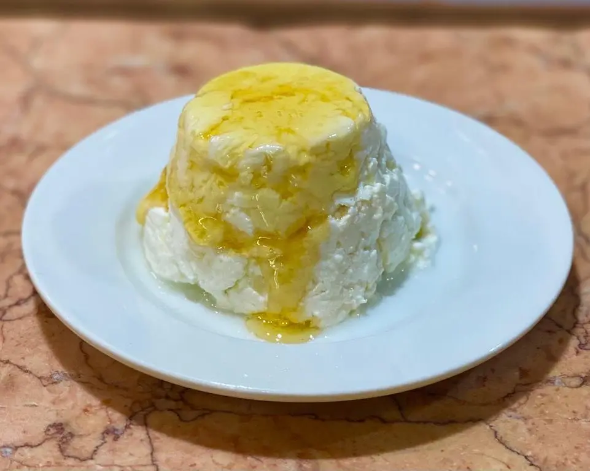
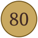

Queso fresco suave, tradicionalmente acompañado de miel.
El «mel i mató» es una de las combinaciones más antiguas de la cocina catalana. Un queso fresco de leche, sin sal, de textura tierna y sabor lácteo; la miel, dorada, aportando toda la dulzura. No necesita nada más.

La montaña de Montserrat es uno de los símbolos espirituales y culturales de Cataluña, y su mató ha acompañado a peregrinos y visitantes durante siglos. La práctica del «mel i mató» se remonta a la época medieval, cuando se ofrecía como postre en los monasterios y en los caminos de romería.
En La Pallaresa seguimos la práctica: mató, miel, y nada más.
